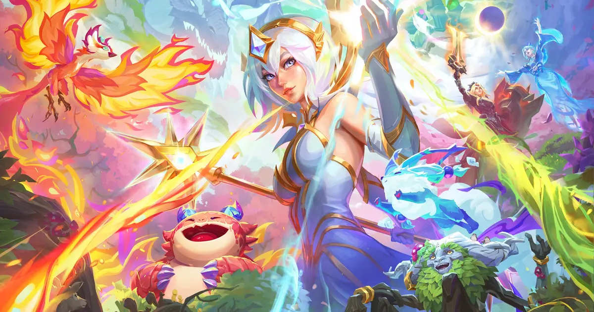

롤토체스 처형자 소라카 점유율 1위 오른 이유, 버프 한 줄이 만든 메타였어요
패치 노트에 딱 한 줄, '소라카 1차 별 피해량 상향'. 저는 이거 보고도 '뭐 이 정도로 순위가 확 바뀌겠어' 싶었거든요. 그런데 9월 1일 핫픽스가 적용되고 며칠 지나서 순방률 표를 열어보니, 처형자 소라카 덱이 상위 8덱 중 표본이 제일 많은 점유율 1위 자리에 올라와 있더라고요. 오늘은 이 패치 한 줄이 어떻게 메타 판을 뒤집었는지, 그리고 처형자 소라카 덱을 어떻게 굴려야 하는지 하나씩 정리해볼게요.

세트18 '신비의 숲' 공식 키비주얼이에요.
이미지 출처: 라이엇 공식 '신비의 숲 개요' 페이지 · 네이버 본문엔 받아서 재업로드 권장
9월 1일 18.1d 핫픽스, 소라카한테 정확히 뭘 줬을까
9월 1일 적용된 18.1d 핫픽스에서 소라카의 1차 별 피해량이 주문력 190/285에서 225/335로 올랐습니다. 라이엇 공식 패치노트 원문 그대로 옮기면 "소라카 1차 별 피해량: 주문력 190/285 ⇒ 주문력 225/335"인데요, 이 문구는 18.1 패치노트 하단 '추가 패치 노트' 절에 실려 있어요. 이 소라카 상향은 9월 1일자로 적용된 밸런스 패치 묶음(드레이븐·장로 드래곤·아리·아무무 등 14건) 중 하나였고, 소라카만 따로 떨어진 단독 조치는 아니었더라고요.
소라카는 원래도 4코스트 챔피언이라 픽률 자체가 낮지 않은 카드였어요. 거기에 딜 수치까지 확 오르면서, 안 그래도 잘 쓰이던 카드가 아예 '이 덱 하나로 밀어붙여도 되겠다' 싶은 카드로 바뀐 셈입니다.
처형자 소라카가 정말 점유율 1위인지 표로 확인해볼게요
2026년 9월 4일 오후 9시 44분~45분(KST) 무렵 조회 기준, 처형자 소라카는 상위 8덱 중 점유율 16.27%로 표본이 가장 많은 1위 덱이에요. 패치 18.1d·마스터+ 랭크·최근 2일 슬라이스·전체 표본 36만 4,229판 중에서 뽑은 수치라는 것도 같이 챙겨두면 좋겠어요.
| 순위 | 덱 | 점유율 | 순방률 | 평균등수 |
|---|---|---|---|---|
| 1 | 처형자 소라카 | 16.27% | 52.5% | 4.40 |
| 2 | 속사포 아펠리오스 | 9.10% | 47.2% | - |
| 3 | 나무정령 이즈리얼 | 8.65% | - | - |
여기서 헷갈리면 안 되는 게 하나 있는데요, 소라카 챔피언 자체의 등장률은 이 덱 점유율과 다른 숫자예요. 4코스트 챔피언 슬라이스(표본 9만 8,000판·1만 2,250경기)만 따로 보면 소라카는 20.74% 등장률에 평균 등수 4.43, 표본 2만 324로 잡히는데요, 이건 '어떤 조합에서든 소라카를 픽한 비율'이라 처형자 소라카 '덱'만 골라 쓴 사람들의 성적표(16.27%·52.5%·4.40)와는 결이 달라요.
소라카 스킬 '별부름', 왜 이렇게 세진 걸까
별부름이 정확히 어떤 스킬이길래 이렇게까지 화제일까요? 대상에게 별을 떨어뜨려 피해를 입히고, 그 대상에게 이미 별이 한 번 떨어진 적이 있다면 별 3개가 추가로 떨어지는 구조입니다. 즉 같은 상대를 두 번 이상 노릴수록 더 아파지는 스킬이라, 이번 패치로 1차 별 피해량이 오른 게 생각보다 파급력이 크더라고요.
| 구분 | 1성 | 2성 | 3성 |
|---|---|---|---|
| 1차 별 피해 | 225 | 335 | 1000 |
| 재차 별 피해(3개 각각) | 100 | 150 | 1000 |
현재(18.1d 이후) 별부름 수치예요. 1차 별 피해가 이번 패치로 190/285에서 225/335로 오른 값이 반영된 표고, 재차 별 3개는 각각 100/150/1000의 마법 피해를 추가로 줘요.
처형자 소라카 덱 코어는 이렇게 짜여있어요
처형자 소라카 덱의 코어는 소라카·자이라·말파이트·케넨 4명이고, 각자 정해진 아이템 세 개씩을 채워야 완성돼요. 롤체지지 집계 기준 코어 조합을 정리하면 아래 표와 같습니다.
| 챔피언 | 코스트 | 아이템 |
|---|---|---|
| 소라카 | 4코 | 라바돈의 죽음모자 · 쇼진의 창 · 타격대의 철퇴 |
| 자이라 | 4코 | 보석 건틀릿 · 쇼진의 창 · 공허의 지팡이 |
| 말파이트 | 4코 | 크라운가드 · 가고일 돌갑옷 · 워모그의 갑옷 |
| 케넨 | 5코 | 밤의 끝자락 · 정의의 손길 · 타격대의 철퇴 |
아이템 결만 보면 성격이 확 갈려요. 말파이트는 세 개 전부 방어형 아이템이라 탱커 역할이 뚜렷하고, 자이라는 마법 딜러형 아이템(보석 건틀릿·공허의 지팡이)이라 딜 넣는 역할이에요. 소라카도 라바돈의 죽음모자·쇼진의 창처럼 주문력·스킬가속을 밀어주는 아이템으로 별부름 데미지를 극대화하는 방향입니다.
특성은 뭘 맞추는 덱일까
특성 단계가 여러 개라 한 번에 나열하면 헷갈리는데, 정리하고 보면 뼈대는 명확합니다. 이 덱은 처형자 4단계·소환사 3단계(둘 다 골드)를 축으로, 나머지 특성 6개를 자연스럽게 곁들이는 구조예요. 표로 정리하면 아래와 같습니다.
| 특성 | 단계 |
|---|---|
| 처형자 | 4단계 (골드) |
| 소환사 | 3단계 (골드) |
| 치명적인 꽃 | 2단계 (골드) |
| 거석 | 1단계 (골드) |
| 가시의 여인 | 1단계 (골드) |
| 검은 가시 | 2단계 (브론즈) |
| 지옥불 | 2단계 (브론즈) |
| 전쟁기계 | 2단계 (브론즈) |
배치는 이렇게 — 소라카를 어디 세워야 별부름이 잘 맞을까
소라카를 어디에 세워야 별부름이 안전하게 나갈까요? 기본은 말파이트를 최전열에 세워 벽을 만들고, 소라카는 그 뒤 후열에서 별부름을 굴리는 배치입니다. 방어형 아이템 세 개를 든 말파이트가 앞에서 버텨주는 동안, 소라카랑 자이라 같은 스킬 딜러들은 최대한 뒤쪽에서 오래 살아남게 챙기는 게 핵심이고요. 정확한 좌표까지 콕 집어 정해진 건 아니라서, 상대 조합에 따라 조정은 필요합니다.
- 말파이트(탱커, 방어형 아이템 3개) → 최전열 1~2열에서 벽 역할.
- 소라카(별부름 딜러) → 후열 6~7열, 사거리 안에서 최대한 안전하게 뒤에서 별을 굴리는 자리.
- 자이라(마법 딜러) → 중열~후열, 소라카와 비슷한 사거리 라인에 함께 세워 스킬 딜을 겹치는 방식.
- 케넨(5코) → 상대 조합을 보고 유동적으로 배치하는 편이 낫고, 고정된 자리로 단정하긴 어려워요.
초반부터 후반까지 어떻게 운영해야 할까
게임 초반부터 후반까지, 운영 우선순위를 나눠서 굴리는 게 낫습니다. 초반 1~3단계엔 골드를 아끼며 기본 아이템 재료를 모으고, 4단계 이후부터 처형자·소환사 특성 조각을 본격적으로 채워가는 흐름이에요. 8특성이나 뜨는 5코 유닛 아이템(밤의 끝자락·정의의 손길처럼)까지 초반부터 챙기기엔 손이 부족하거든요.
중반(4~5단계)에는 레벨을 찍으면서 소라카·자이라·말파이트 같은 4코스트 코어부터 먼저 잡는 걸 추천드립니다. 4코 챔피언이라 초중반엔 상점에 잘 안 뜨는 편이라, 이 타이밍부터 미리 굴려둬야 후반에 급하게 리롤하는 상황을 줄일 수 있거든요. 후반(6~7단계)에 레벨 8까지 올라가면 그때 케넨을 얹어 4코어를 완성하고, 남는 골드는 특성 브레이크포인트(처형자 4·소환사 3)를 맞추는 데 쓰는 식이에요.
다만 이 수치들은 패치가 없어도 매일 조금씩 움직이는 살아있는 통계라는 것도 꼭 짚고 갈게요. 저는 롤체지지를 실시간 통계 트래커로 자주 열어보는 편인데, 오늘 정리한 아이템·특성 조합도 며칠 지나면 순위가 바뀔 수 있으니 이 덱으로 계속 갈지는 그때그때 직접 확인해보시는 걸 추천드려요.
자주 묻는 질문
Q. 처형자 소라카 덱, 아이템은 무조건 이 조합대로 가야 하나요?
위 표는 롤체지지가 집계한 코어 조합이라 참고용 골격에 가까워요. 실전에서는 초반에 먼저 잡힌 아이템 재료에 맞춰 유동적으로 순서를 조정하는 게 자연스러워요.
Q. 이 점유율·순방률 수치, 앞으로도 계속 그대로인가요?
아니요, 오히려 패치 소식이 뜰 때 가장 크게 움직여요. 이번 처형자 소라카도 딱 패치노트 한 줄(1차 별 피해량 상향)로 점유율 1위까지 올라온 사례라, 새 패치가 예고되면 그 직후에 순방률·점유율표부터 다시 열어보는 습관을 들이면 좋습니다. 패치가 없는 평소에도 표본은 매일 갱신되니, 오늘 적어둔 16.27%·52.5%·4.40 같은 숫자는 참고용 스냅샷으로 보시고 최신 흐름은 롤체지지에서 직접 확인해보세요.
처형자 소라카 정리
정리하면, 9월 1일 18.1d 핫픽스로 소라카의 1차 별 피해량이 190/285에서 225/335로 오른 게 시작이었고, 이 한 줄 버프 이후로 처형자 소라카 덱이 상위 8덱 중 점유율 1위(표본 최다·16.27%, 순방률 52.5%, 평균 등수 4.40)로 올라섰어요. 소라카·자이라·말파이트·케넨 4코어에 처형자 4·소환사 3 특성을 축으로 맞추고, 말파이트를 앞세워 소라카를 뒤에서 지켜주는 배치가 지금까지는 잘 통하는 것 같아요. 예전에 블로그에 올렸던 세트18 조합 티어 글에서는 엄호대 카시오페아·개화 아리·나무정령 드레이븐을 다뤘었는데, 그 표에는 없던 처형자 소라카 조합을 이번에 새로 정리해본 거예요. 이 덱으로 한 판 달려보실 분들은 참고해보세요 ㅎㅎ
✔ 세트18 같이 보기 좋은 내용
· 블로그에 올렸던 세트18 조합 티어 글(엄호대 카시오페아·개화 아리·나무정령 드레이븐 편) — 처형자 소라카는 그 표에 없던 조합이에요.
참고한 곳
· 라이엇게임즈 공식 — 전략적 팀 전투 18.1 패치 노트(9월 1일 적용 추가 패치노트 포함, 2026.09.04 확인 기준)